Graphs of Logarithmic Functions
Learning Objectives
- Find the domain and range of a relation and a function. (IA 3.5.1)
- Graph Logarithmic functions. (IA 10.3.3)
Objective 1: Find the domain and range of a relation and a function. (IA 3.5.1)
Find the domain and range of a relation and a function.
-
ⓐ
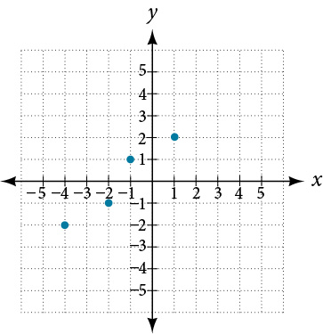
-
ⓑ
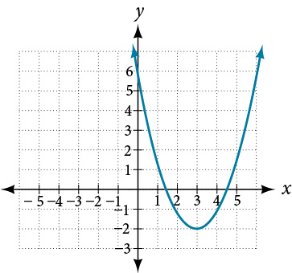
-
ⓒ
Find the domain of the function
-
ⓓ
Find the domain of the function .
Solution
- ⓐ
The set of points on the graph is
The Domain is the set of all x-coordinates:
The Range is the set of all y-coordinates:
Notice that even though y-coodinate of 1 appears twice, we only list it once. - ⓑ
Domain:
Range:
Notice that is included because the point is on the graph of a function. - ⓒ
A function is not defined when the denominator is zero. We need to set the denominator equal zero and exclude this value(s) from the domain.
Domain
Notice that 2 is excluded from the domain because the function is not defined at - ⓓ
From the definition of the logarithmic function we know that
To find domain of , we need to set up and solve inequality.
,
Domain:
Practice Makes Perfect
Find the domain and range of a relation and a function.
Find the domain and range of a relation.
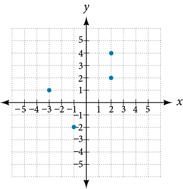
Find the domain and the range of the function graphed. Use interval notation.
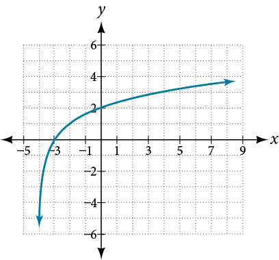
Find the domain of the function . Notice: this is the same function that was graphed in question 2.
Objective 2: Graph Logarithmic functions. (IA 10.3.3)
To graph a logarithmic function , it is easiest to convert the equation to its exponential form, . Generally, when we look for ordered pairs for the graph of a function, we usually choose an x-value and then determine its corresponding y-value. In this case you may find it easier to choose y-values and then determine its corresponding x-value.
Graph Logarithmic functions.
Graph
Solution
To graph the function, we will first rewrite the logarithmic equation, in exponential form,
We will use point plotting to graph the function. It will be easier to start with values of y and then get x.
| 0 | ||
| 1 | ||
| 2 | ||
| 3 |
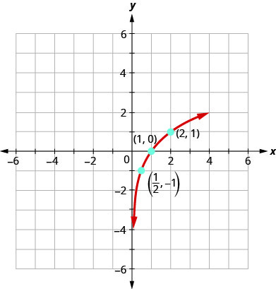
Practice Makes Perfect
Graph Logarithmic functions

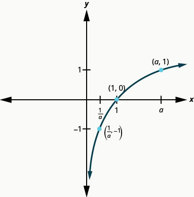
Do the graphs of , , and have the shape we expect from a logarithmic function where ? (Remember a is the base of the log function)
Is there a point they all share? Why does this make sense?
Do they all have a point ? Why does this make sense?
Do they all have a point ? Why does this make sense?
Do they all have the same vertical asymptote? What is the equation of the vertical asymptote?
Do they all have the same domain? Write the domain in the interval notation.
Do they all have the same range? Write the range in the interval notation.
In Graphs of Exponential Functions, we saw how creating a graphical representation of an exponential model gives us another layer of insight for predicting future events. How do logarithmic graphs give us insight into situations? Because every logarithmic function is the inverse function of an exponential function, we can think of every output on a logarithmic graph as the input for the corresponding inverse exponential equation. In other words, logarithms give the cause for an effect.
To illustrate, suppose we invest in an account that offers an annual interest rate of compounded continuously. We already know that the balance in our account for any year can be found with the equation
But what if we wanted to know the year for any balance? We would need to create a corresponding new function by interchanging the input and the output; thus we would need to create a logarithmic model for this situation. By graphing the model, we can see the output (year) for any input (account balance). For instance, what if we wanted to know how many years it would take for our initial investment to double? Figure 1 shows this point on the logarithmic graph.
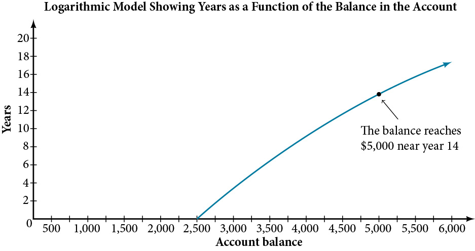
In this section we will discuss the values for which a logarithmic function is defined, and then turn our attention to graphing the family of logarithmic functions.
Finding the Domain of a Logarithmic Function
Before working with graphs, we will take a look at the domain (the set of input values) for which the logarithmic function is defined.
Recall that the exponential function is defined as for any real number and constant where
- The domain of is
- The range of is
In the last section we learned that the logarithmic function is the inverse of the exponential function So, as inverse functions:
- The domain of is the range of
- The range of is the domain of
Transformations of the parent function behave similarly to those of other functions. Just as with other parent functions, we can apply the four types of transformations—shifts, stretches, compressions, and reflections.
In Graphs of Exponential Functions we saw that certain transformations can change the range of Similarly, applying transformations to the parent function can change the domain. When finding the domain of a logarithmic function, therefore, it is important to remember that the domain consists only of positive real numbers. That is, the argument of the logarithmic function must be greater than zero.
For example, consider This function is defined for any values of such that the argument, in this case is greater than zero. To find the domain, we set up an inequality and solve for
In interval notation, the domain of is
Identifying the Domain of a Logarithmic Shift
What is the domain of
Solution
The logarithmic function is defined only when the input is positive, so this function is defined when Solving this inequality,
The domain of is
Identifying the Domain of a Logarithmic Shift and Reflection
What is the domain of
Solution
The logarithmic function is defined only when the input is positive, so this function is defined when Solving this inequality,
The domain of is
Graphing Logarithmic Functions
Now that we have a feel for the set of values for which a logarithmic function is defined, we move on to graphing logarithmic functions. The family of logarithmic functions includes the parent function along with all its transformations: shifts, stretches, compressions, and reflections.
We begin with the parent function Because every logarithmic function of this form is the inverse of an exponential function with the form their graphs will be reflections of each other across the line To illustrate this, we can observe the relationship between the input and output values of and its equivalent in Table 1.
Using the inputs and outputs from Table 1, we can build another table to observe the relationship between points on the graphs of the inverse functions and See Table 2.
As we’d expect, the x- and y-coordinates are reversed for the inverse functions. Figure 2 shows the graph of and
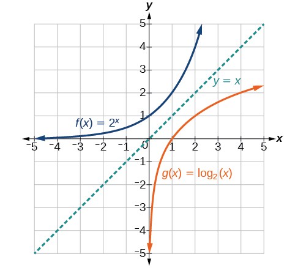
Observe the following from the graph:
- has a y-intercept at and has an x- intercept at
- The domain of is the same as the range of
- The range of is the same as the domain of
Graphing a Logarithmic Function with the Form f(x) = logb(x).
Graph State the domain, range, and asymptote.
Solution
Before graphing, identify the behavior and key points for the graph.
- Since is greater than one, we know the function is increasing. The left tail of the graph will approach the vertical asymptote and the right tail will increase slowly without bound.
- The x-intercept is
- The key point is on the graph.
- We draw and label the asymptote, plot and label the points, and draw a smooth curve through the points (see Figure 5).
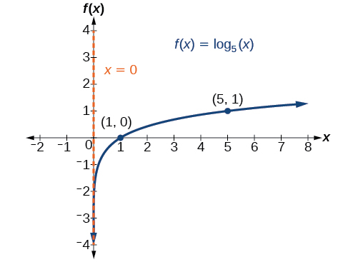
The domain is the range is and the vertical asymptote is
Graphing Transformations of Logarithmic Functions
As we mentioned in the beginning of the section, transformations of logarithmic graphs behave similarly to those of other parent functions. We can shift, stretch, compress, and reflect the parent function without loss of shape.
Graphing a Horizontal Shift of f(x) = logb(x)
When a constant is added to the input of the parent function the result is a horizontal shift units in the opposite direction of the sign on To visualize horizontal shifts, we can observe the general graph of the parent function and for alongside the shift left, and the shift right, See Figure 6.
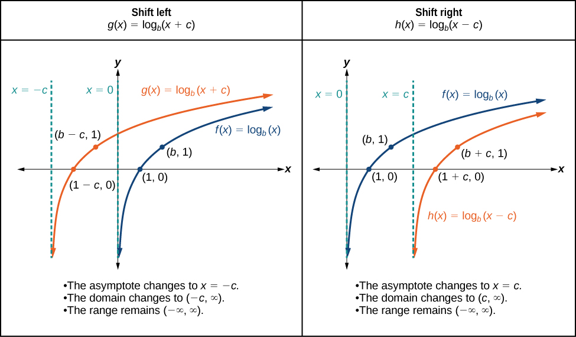
Graphing a Horizontal Shift of the Parent Function y = logb(x)
Sketch the horizontal shift alongside its parent function. Include the key points and asymptotes on the graph. State the domain, range, and asymptote.
Solution
Since the function is we notice
Thus so This means we will shift the function right 2 units.
The vertical asymptote is or
Consider the three key points from the parent function, and
The new coordinates are found by adding 2 to the coordinates.
Label the points and
The domain is the range is and the vertical asymptote is
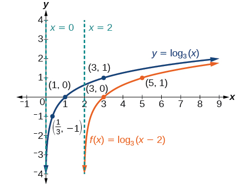
Graphing a Vertical Shift of f(x) = logb(x)
When a constant is added to the parent function the result is a vertical shift units in the direction of the sign on To visualize vertical shifts, we can observe the general graph of the parent function alongside the shift up, and the shift down, See Figure 8.

Graphing a Vertical Shift of the Parent Function f(x) = logb(x)
Sketch a graph of alongside its parent function. Include the key points and asymptote on the graph. State the domain, range, and asymptote.
Solution
Since the function is we will notice Thus
This means we will shift the function down 2 units.
The vertical asymptote is
Consider the three key points from the parent function, and
The new coordinates are found by subtracting 2 from the y coordinates.
Label the points and
The domain is the range is and the vertical asymptote is
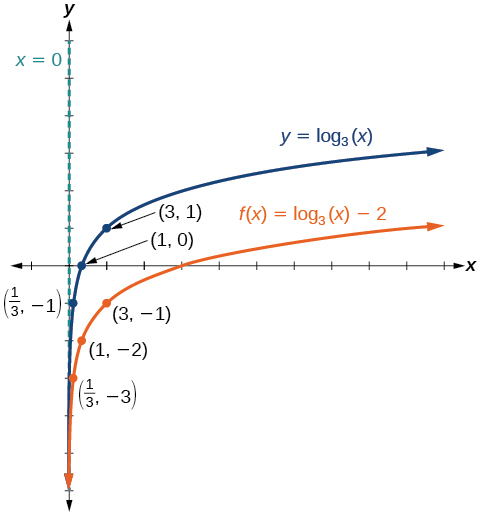
The domain is the range is and the vertical asymptote is
Graphing Stretches and Compressions of f(x) = logb(x)
When the parent function is multiplied by a constant the result is a vertical stretch or compression of the original graph. To visualize stretches and compressions, we set and observe the general graph of the parent function alongside the vertical stretch, and the vertical compression, See Figure 10.
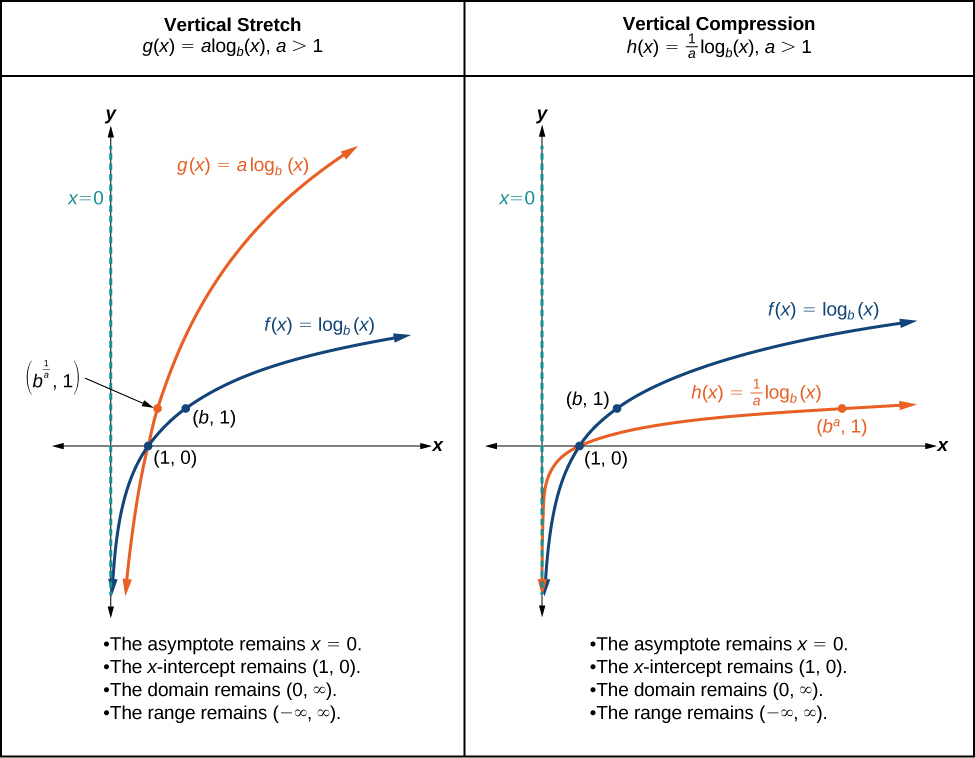
Graphing a Stretch or Compression of the Parent Function f(x) = logb(x)
Sketch a graph of alongside its parent function. Include the key points and asymptote on the graph. State the domain, range, and asymptote.
Solution
Since the function is we will notice
This means we will stretch the function by a factor of 2.
The vertical asymptote is
Consider the three key points from the parent function, and
The new coordinates are found by multiplying the coordinates by 2.
Label the points and
The domain is the range is and the vertical asymptote is See Figure 11.
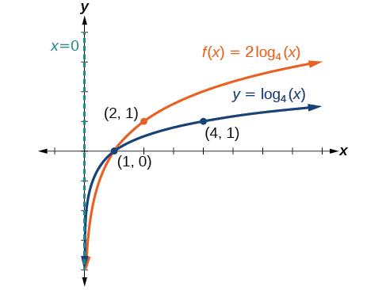
The domain is the range is and the vertical asymptote is
Combining a Shift and a Stretch
Sketch a graph of State the domain, range, and asymptote.
Solution
Remember: what happens inside parentheses happens first. First, we move the graph left 2 units, then stretch the function vertically by a factor of 5, as in Figure 12. The vertical asymptote will be shifted to The x-intercept will be The domain will be Two points will help give the shape of the graph: and We chose as the x-coordinate of one point to graph because when the base of the common logarithm.
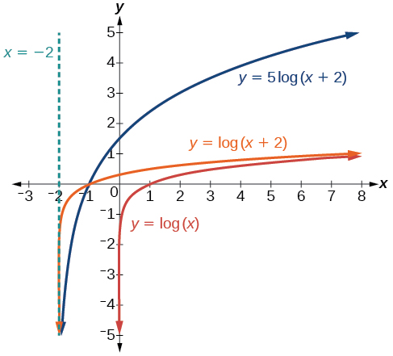
The domain is the range is and the vertical asymptote is
Graphing Reflections of f(x) = logb(x)
When the parent function is multiplied by the result is a reflection about the x-axis. When the input is multiplied by the result is a reflection about the y-axis. To visualize reflections, we restrict and observe the general graph of the parent function alongside the reflection about the x-axis, and the reflection about the y-axis,
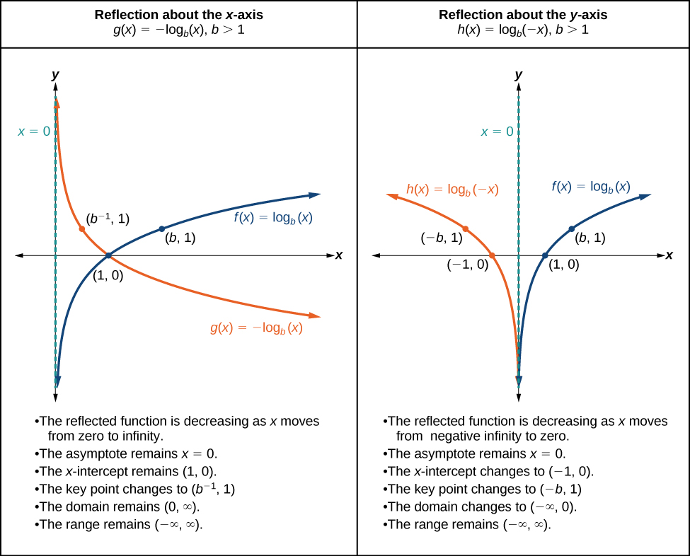
Graphing a Reflection of a Logarithmic Function
Sketch a graph of alongside its parent function. Include the key points and asymptote on the graph. State the domain, range, and asymptote.
Solution
Before graphing identify the behavior and key points for the graph.
- Since is greater than one, we know that the parent function is increasing. Since the input value is multiplied by is a reflection of the parent graph about the y-axis. Thus, will be decreasing as moves from negative infinity to zero, and the right tail of the graph will approach the vertical asymptote
- The x-intercept is
- We draw and label the asymptote, plot and label the points, and draw a smooth curve through the points.
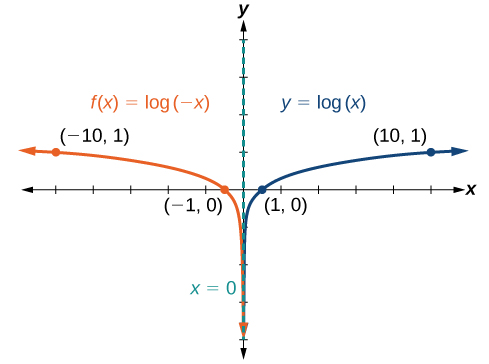
The domain is the range is and the vertical asymptote is
Approximating the Solution of a Logarithmic Equation
Solve graphically. Round to the nearest thousandth.
Solution
Press [Y=] and enter next to Y1=. Then enter next to Y2=. For a window, use the values 0 to 5 for and –10 to 10 for Press [GRAPH]. The graphs should intersect somewhere a little to right of
For a better approximation, press [2ND] then [CALC]. Select [5: intersect] and press [ENTER] three times. The x-coordinate of the point of intersection is displayed as 1.3385297. (Your answer may be different if you use a different window or use a different value for Guess?) So, to the nearest thousandth,
Summarizing Translations of the Logarithmic Function
Now that we have worked with each type of translation for the logarithmic function, we can summarize each in Table 4 to arrive at the general equation for translating exponential functions.
| Transformations of the Parent Function | |
|---|---|
| Transformation | Form |
Shift
|
|
Stretch and Compress
|
|
| Reflect about the x-axis | |
| Reflect about the y-axis | |
| General equation for all translations | |
Finding the Vertical Asymptote of a Logarithm Graph
What is the vertical asymptote of
Solution
The vertical asymptote is at
Finding the Equation from a Graph
Find a possible equation for the common logarithmic function graphed in Figure 15.
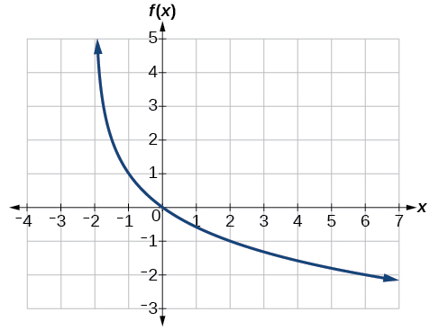
Solution
This graph has a vertical asymptote at and has been vertically reflected. We do not know yet the vertical shift or the vertical stretch. We know so far that the equation will have form:
It appears the graph passes through the points and Substituting
Next, substituting in ,
This gives us the equation
Key Equations
| General Form for the Translation of the Parent Logarithmic Function |
Key Concepts
- To find the domain of a logarithmic function, set up an inequality showing the argument greater than zero, and solve for See Example 3 and Example 4
- The graph of the parent function has an x-intercept at domain range vertical asymptote and
- if the function is increasing.
- if the function is decreasing.
- The equation shifts the parent function horizontally
- left units if
- right units if
- The equation shifts the parent function vertically
- up units if
- down units if
- For any constant the equation
- stretches the parent function vertically by a factor of if
- compresses the parent function vertically by a factor of if
- When the parent function is multiplied by the result is a reflection about the x-axis. When the input is multiplied by the result is a reflection about the y-axis.
- The equation represents a reflection of the parent function about the x-axis.
- The equation represents a reflection of the parent function about the y-axis.
- A graphing calculator may be used to approximate solutions to some logarithmic equations See Example 11.
- All translations of the logarithmic function can be summarized by the general equation See Table 4.
- Given an equation with the general form we can identify the vertical asymptote for the transformation. See Example 12.
- Using the general equation we can write the equation of a logarithmic function given its graph. See Example 13.
Section Exercises
Verbal
The inverse of every logarithmic function is an exponential function and vice-versa. What does this tell us about the relationship between the coordinates of the points on the graphs of each?
Solution
Since the functions are inverses, their graphs are mirror images about the line So for every point on the graph of a logarithmic function, there is a corresponding point on the graph of its inverse exponential function.
What type(s) of translation(s), if any, affect the range of a logarithmic function?
What type(s) of translation(s), if any, affect the domain of a logarithmic function?
Solution
Shifting the function right or left and reflecting the function about the y-axis will affect its domain.
Consider the general logarithmic function Why can’t be zero?
Does the graph of a general logarithmic function have a horizontal asymptote? Explain.
Solution
No. A horizontal asymptote would suggest a limit on the range, and the range of any logarithmic function in general form is all real numbers.
Algebraic
For the following exercises, state the domain and range of the function.
Solution
Domain: Range:
Solution
Domain: Range:
For the following exercises, state the domain and the vertical asymptote of the function.
Solution
Domain: Vertical asymptote:
Solution
Domain: Vertical asymptote:
Solution
Domain: Vertical asymptote:
For the following exercises, state the domain, vertical asymptote, and end behavior of the function.
Solution
Domain: ;
Vertical asymptote: ; End behavior: as and as
Solution
Domain: ; Vertical asymptote: ;
End behavior: as ,
and as ,
For the following exercises, state the domain, range, and x- and y-intercepts, if they exist. If they do not exist, write DNE.
Solution
Domain: Range: Vertical asymptote: x-intercept: y-intercept: DNE
Solution
Domain: Range: Vertical asymptote: x-intercept: y-intercept: DNE
Solution
Domain: Range: Vertical asymptote: x-intercept: y-intercept: DNE
Graphical
For the following exercises, match each function in Figure 17 with the letter corresponding to its graph.
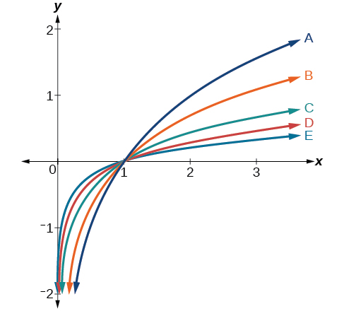
Solution
B
Solution
C
For the following exercises, match each function in Figure 18 with the letter corresponding to its graph.
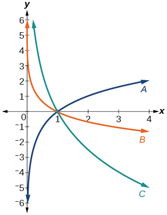
Solution
B
Solution
C
For the following exercises, sketch the graphs of each pair of functions on the same axis.
and
and
Solution
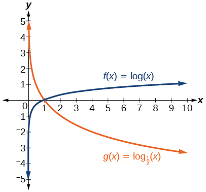
and
and
Solution
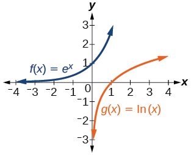
For the following exercises, match each function in Figure 19 with the letter corresponding to its graph.
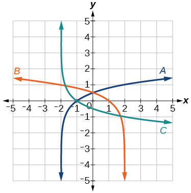
Solution
C
For the following exercises, sketch the graph of the indicated function.
Solution
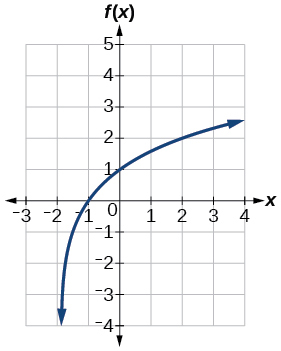
Solution
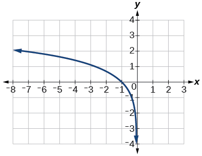
Solution
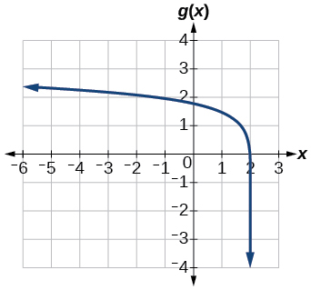
For the following exercises, write a logarithmic equation corresponding to the graph shown.
Use as the parent function.
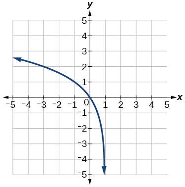
Solution
Use as the parent function.
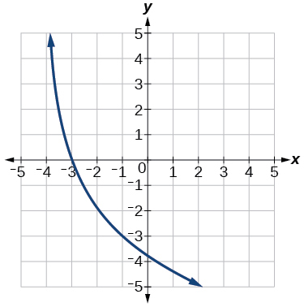
Use as the parent function.
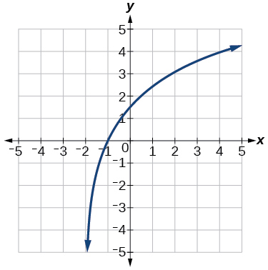
Solution
Use as the parent function.
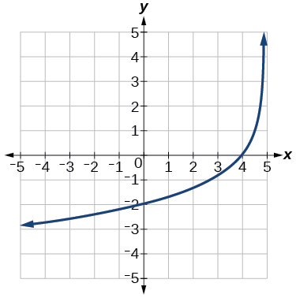
Technology
For the following exercises, use a graphing calculator to find approximate solutions to each equation.
Solution
Solution
Solution
Extensions
Let be any positive real number such that What must be equal to? Verify the result.
Explore and discuss the graphs of and Make a conjecture based on the result.
Solution
The graphs of and appear to be the same; Conjecture: for any positive base
Prove the conjecture made in the previous exercise.
What is the domain of the function Discuss the result.
Solution
Recall that the argument of a logarithmic function must be positive, so we determine where . From the graph of the function note that the graph lies above the x-axis on the interval and again to the right of the vertical asymptote, that is Therefore, the domain is
![A graph of a rational function is shown on an xy-coordinate plane. The x-axis ranges from -10 to 10, and the y-axis ranges from -10 to 10. A vertical dashed orange line, labeled "x = 4", represents a vertical asymptote. The graph consists of two smooth blue curves. The left curve extends from negative infinity in the second quadrant, passes through the x-intercept at (-2, 0) (marked with a blue dot), and decreases towards negative infinity as it approaches the vertical asymptote x=4 from the left. The right curve begins at positive infinity as it approaches the vertical asymptote x=4 from the right, then decreases and approaches the x-axis from above as x tends towards positive infinity in the first quadrant.](../../media/CNX_Precalc_Figure_04_04_219.jpg)
Use properties of exponents to find the x-intercepts of the function algebraically. Show the steps for solving, and then verify the result by graphing the function.
Analysis
The coefficient, the base, and the upward translation do not affect the asymptote. The shift of the curve 4 units to the left shifts the vertical asymptote to